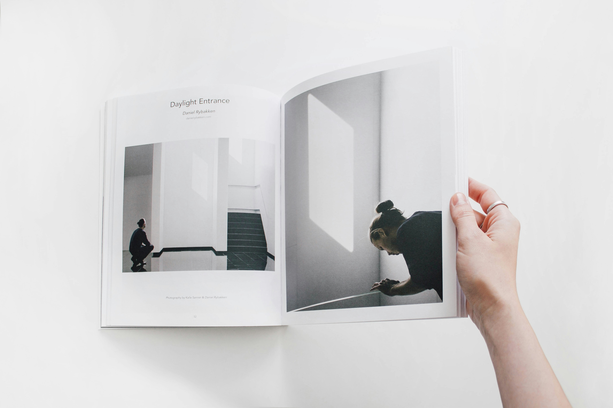

Hello 👋
I design and lead product experiences for complex identity and access systems.
- Currently shaping AI-powered privileged access workflows for MSPs and enterprise environments
- 8+ years shipping early-stage and scaled products across IAM, PAM, data and security platforms
- Known for clarifying ambiguity, aligning cross-functional teams, and designing resilient system-level UX
Selected projects for Okta team
AI power privileged access management solution
Learn moreBrowser extension for Just-in-time account access
Learn moreTenant assessment for co-pilot readiness

PS: This portfolio highlights selected work prepared specifically for the Okta team.
I'm happy to walk through the underlying rationale, tradeoffs, and decision-making in more depth during a conversation.